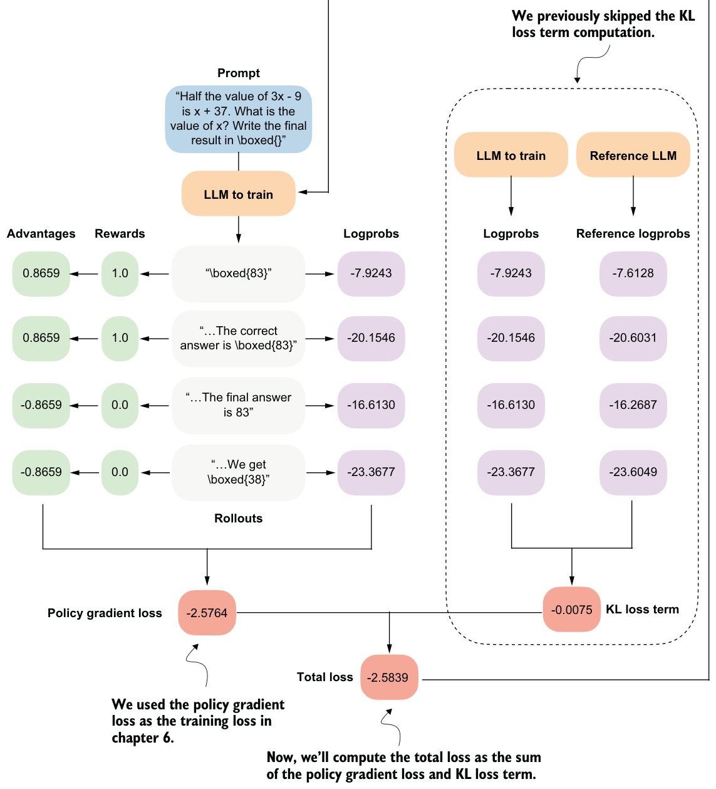
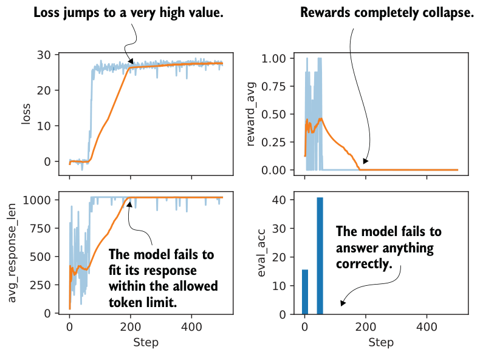

7.5.1Implementing the KL loss term
Figure 7.15 shows the KL loss term computation as part of the GRPO algorithm. The KL loss term calculation involves comparing logprobs and reference logprobs. It is computed by summing the differences between these corresponding logprobs.
A small KL loss term value indicates that the current model and the reference model output relatively similar logprobs, meaning the current model has not changed much compared to the reference model. This is generally desirable for stability, as it prevents large, abrupt shifts in behavior. If the KL loss term remains too small for too long, it may also indicate that learning is limited.
The resulting KL loss term is then added to the policy gradient loss to compute the total loss, so weight updates that greatly increase divergence from the reference model, even if they result in a high reward, are penalized during training.
In the clipped policy ratio section, we replaced the reference model in each iteration. For the KL loss term, the reference model used to compute the reference logprobs is the original model at the beginning of training, and it is either kept fixed or replaced relatively rarely (in the case of DeepSeek-R1, every 400 steps).
The following code illustrates how the compute_grpo_loss function can be modified to include this KL loss term. To avoid code duplication, listing 7.9 does not show the fully modified compute_grpo_loss_with_kl function. It instead focuses on the changes we need to make to the compute_grpo_loss function. The new additions are marked with comments or are located inside the if kl_coeff blocks.

import copykl_coeff = 0.0
if kl_coeff:
ref_model = copy.deepcopy(model).to(device)
ref_model.eval()
for p in ref_model.parameters():
p.requires_grad = False
else:
ref_model = None
def compute_grpo_loss_with_kl(
model,
ref_model,
# ...
kl_coeff=0.02,
):
roll_logps, roll_ref_logps, roll_rewards, samples = [], [], [], []
# ...
for _ in range(num_rollouts):
token_ids, prompt_len, text = sample_response(
# ...
)
if kl_coeff:
with torch.no_grad():
ref_logp = sequence_logprob(
ref_model, token_ids, prompt_len
)
else:
ref_logp = None
reward = reward_rlvr(text, example["answer"])
roll_rewards.append(reward)
roll_logps.append(logp)
if kl_coeff:
roll_ref_logps.append(ref_logp)
# ...
rewards = torch.tensor(roll_rewards, device=device)
advantages = (rewards - rewards.mean()) / (rewards.std() + 1e-4)
logps = torch.stack(roll_logps)
if kl_coeff:
ref_logps = torch.stack(roll_ref_logps).detach()
pg_loss = -(advantages.detach() * logps).mean() if kl_coeff:
kl_loss = kl_coeff * torch.mean(logps - ref_logps)
else:
kl_loss = torch.tensor(0.0, device=logps.device) loss = pg_loss + kl_lossNote that adding the KL loss term increases resource use, since we now need to keep an additional copy of the original model. The strength of this penalty is controlled by kl_coeff. Larger kl_coeff values add a stronger constraint on how far the current policy is allowed to change from the reference model.
The setting kl_coeff = 0.0 at the top of listing 7.9 is included only so that this abbreviated code snippet won’t crash if we run it in a code environment. In practice, kl_coeff is typically a small value between 0.001 and 0.05.
7.5.2Training with a KL loss term
The following script from the book’s supplementary materials implements the KL loss term code modification we’ve discussed:
download_from_github(
"ch07/03_rlvr_grpo_scripts_advanced/7_5_plus_kl.py"
)As before, we can run it as follows:
uv run 7_5_plus_kl.py \
--steps 500 \
--max_new_tokens 1024Let’s take a look at the log files from a training run that was executed with the preceding settings:
download_from_github(
"ch07/02_logs/"
"7_5_plus_kl_metrics.csv"
)
plot_grpo_metrics(
"7_5_plus_kl_metrics.csv",
columns=["loss", "reward_avg", "avg_response_len", "eval_acc"]
)The resulting plots are shown in figure 7.16.
As the accuracy graph at the bottom right shows, the first 50 steps improve the model’s performance noticeably from slightly above 15% accuracy to approximately 40%. We then see a total collapse where the loss values explode and the average reward goes toward 0. This is accompanied by a crash in the evaluation accuracy that also goes toward 0%.

On manually inspecting the generated responses, we can see that the model eventually started producing nonsensical text and random tokens, such as "framework.raises
Self profess(import". There are a couple of likely reasons for this behavior.
First, the KL term is computed using summed logprobs over the answer tokens, that
is, kl_loss = kl_coeff * mean(new_logps - ref_logps). Here, new_logps are computedunder the current trainable policy, while ref_logps are computed under the reference policy, which is the original model at the beginning of training. This reference policy is not the same as the old rollout policy in later training steps. The old policy is a recent snapshot used to generate the sampled responses, whereas the reference policy remains fixed at the initial model.